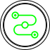

Explore conceitos de redes essenciais para garantir a comunicação segura entre dispositivos e proteger dados em trânsito.
Internet: Mergulhe no funcionamento da Internet, entendendo como ela conecta bilhões de dispositivos ao redor do mundo. Vamos explorar protocolos como TCP/IP, a importância dos servidores e como a infraestrutura de rede suporta a comunicação global.
Internet: Saiba como a Internet conecta dispositivos e acessa serviços online.
Registros de Endereçamentos: Focaremos nos conceitos fundamentais de endereçamento, como endereços IP e MAC. Aprenda como esses identificadores únicos são essenciais para a comunicação entre dispositivos em uma rede, permitindo que informações sejam enviadas e recebidas de forma eficiente e segura.
Registros de Endereçamentos: Entenda como IPs e MACs identificam dispositivos nas redes.
Redes de Comunicação: Discutiremos as diferenças entre redes internas e externas, bem como as várias formas de comunicação que ocorrem entre dispositivos. Entenda as topologias de rede, como LAN, WAN e MAN, e como cada uma delas desempenha um papel crucial na conectividade.
Redes de Comunicação: Explore redes que facilitam a troca de dados entre dispositivos.
Arquiteturas de Redes e Dispositivos Físicos: Aprenda sobre as diferentes arquiteturas de rede, como a arquitetura cliente-servidor e a arquitetura peer-to-peer. Vamos também explorar os dispositivos físicos que compõem essas redes, como roteadores, switches e pontos de acesso, e como eles interagem para formar uma rede funcional.
Arquiteturas de Redes e Dispositivos Físicos: Conheça as arquiteturas e dispositivos que formam as redes.

Tecnologias de Conectividade: Investigue as várias tecnologias que possibilitam a conectividade entre dispositivos, desde cabos de fibra óptica até conexões sem fio como Wi-Fi e Bluetooth. Entenda como cada tecnologia atende a diferentes necessidades de comunicação e suas implicações em termos de velocidade e segurança.
Tecnologias de Conectividade: Descubra tecnologias que conectam dispositivos, como Wi-Fi e Bluetooth.
Classificação de Redes: Explore as diferentes classificações de redes, incluindo redes públicas, privadas, locais e globais. Vamos discutir como cada tipo de rede é utilizado em diferentes contextos e as suas respectivas vantagens e desvantagens, fornecendo uma compreensão abrangente do panorama das redes.
Classificação de Redes: Veja como redes são classificadas por topologia e alcance.
Segurança de Redes: Abordaremos as práticas essenciais de segurança de redes, incluindo firewalls, VPNs e sistemas de detecção de intrusões. Descubra como proteger sua rede contra ameaças cibernéticas e garantir a integridade e a confidencialidade dos dados transmitidos.
Segurança de Redes: Aprenda práticas para proteger redes e manter os dados seguros.
Configuração de Redes em Máquinas: Aprenda o passo a passo para configurar redes em diferentes dispositivos, desde computadores até impressoras e dispositivos móveis. Vamos explorar como configurar endereços IP, sub-redes e protocolos de comunicação, garantindo uma rede operante e eficiente.
Configuração de Redes em Máquinas: Aprenda a configurar redes em diferentes dispositivos.
Softwares Usados para Gerir e Analisar Redes: Conheça os principais softwares utilizados para gerenciar e analisar redes, como ferramentas de monitoramento de tráfego e gerenciamento de configuração. Aprenda como essas ferramentas podem ajudar na otimização do desempenho da rede e na solução de problemas.
Softwares Usados para Gerir e Analisar Redes: Explore softwares para gerenciar e analisar redes.